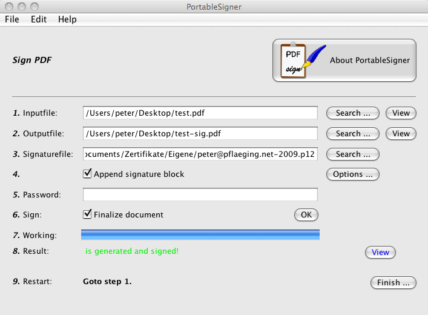
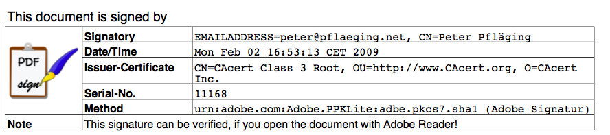
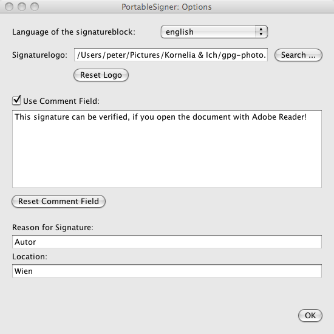
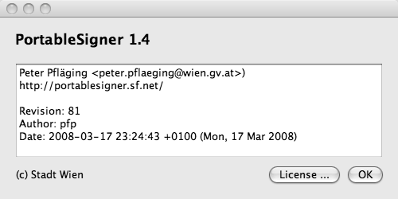

PortableSigner
PortableSigner
PortableSigner is a signing (with X.509 certificates) program
for PDF files. It's plattform independent and runs (tested) under
Windows (2000, XP, ...), Linux and Mac OS X.
It's possible to sign PDF documents digital with X.509
certificates. This signed documents are read only. Therefore it's
possible to implement "electronic paper"
This program
Java 1.5 compatible runtime
one PKCS#12 file with your personal digital X.509 certificate (from CAcert for example)
PDF files to sign
PortableSigner can work in 2 modes:
GUI Desktop Modus : Graphical frontend to sign single documents.
Commandline Modus : Operation from the commandline for batch or operatorless work
If you have a Java 1.5 compatible runtime, unpack the ZIP file and doubleclick or invoke the following commandline from the extracted directory:
java -jar PortableSigner.jar
Now you see something like this:

The operation on base of this screen is straightforward:
Select your inputfile (the last used file is preselected).
Select an outputfile.
Select your PKCS#12 file (I will support other type of files and keystores later. Look in the ToDo)
It is possible to attach a signature block as last page of the document.
The password of your PKCS#12 file.
Press the "Sign" Button
Ready!
Is the Checkbox for "Append signature block" checked, there's an
additional page on the output document with the following block:

Here's the option screen:

Here's the "About ..." dialog. please include the
version info in every request to me!

You can use the following commandline parameter:
pfp$ java -jar PortableSigner.jar -h
usage: PortableSigner
-b <arg> Append signature block [german|english|polish] as
parameter
-c <arg> Comment under signature block (text)
-f If this is set, the document is NOT finalized
-h Help (this page)
-i <arg> Image file for signature block
-l <arg> Contents of "Location" - field (text)
-n Without GUI
-o <arg> Outputfile (PDF)
-ownerpwd <arg> Owner password
-ownerpwdfile <arg> Owner password file
-p <arg> Signaturepassword
-pwdfile <arg> Password file
-r <arg> Contents of "Reason" - field (text)
-s <arg> Signaturefile (P12 or PFX)
-t <arg> Inputfile (PDF)
pfp$
For the example above the following commandline is required:
pfp$ java -jar PortableSigner.jar -n \
-t /Users/pfp/Desktop/unsigned.pdf \
-o /Users/pfp/Desktop/signed.pdf \
-s /Users/pfp/Desktop/pfp.p12 \
-p MySecretPassword
Document
/Users/pfp/Desktop/signed.pdf
is generated and signed!
pfp$
The switch "-n" turns the GUI off. In all other cases the
GUI is invoked to support macro mode calling!
Thanks to all the people helping me with ideas, translations and
patches,...
This
program is made by the EDP department of the Municipality of Vienna
(http://www.wien.gv.at/english/edp/).